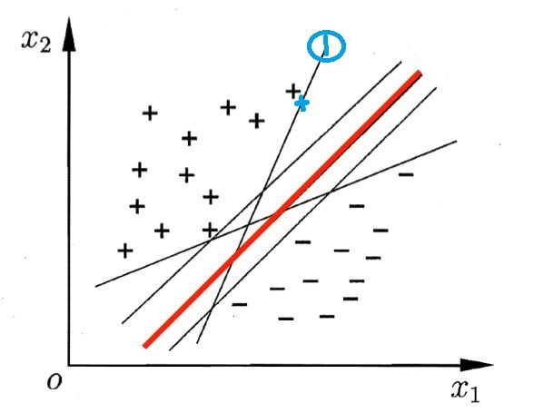
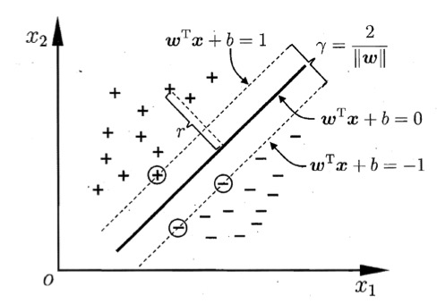
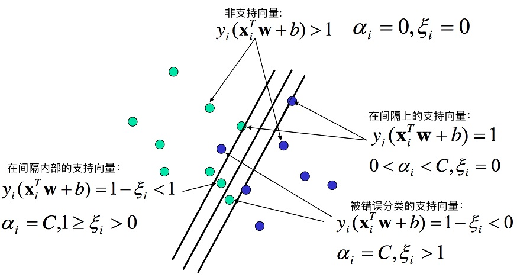

支持向量机（Support Vector Machine, SVM）是一种应用非常广泛的分类方法。其基本模型定义是特征空间上的间隔最大的线性分类器，即支持向量机的学习策略是间隔最大化，最终可转化为一个凸二次规划问题的求解。
简而言之，就是寻找到一个最佳的超平面（hiperplane），可以最完美地划分二类。SVM正是围绕着这一问题，构建的一个方法。
为了解决更加复杂的问题，支持向量机学习方法有一些由简至繁的模型:
- 线性可分SVM
当训练数据线性可分时，通过硬间隔（hard margin，什么是硬、软间隔下面会讲）最大化可以学习得到一个线性分类器，即硬间隔SVM。
- 软间隔SVM
当训练数据不能线性可分但是可以近似线性可分时，通过软间隔（soft margin）最大化也可以学习到一个线性分类器，即软间隔SVM。
- 非线性SVM
当训练数据线性不可分时，通过使用核技巧（kernel trick）和软间隔最大化，可以学习到一个非线性SVM。
线性可分
先看一个简单的例子：

什么的图片中有2类点，一类用 “+” 表示，一类用 “-” 表示，每个点有2个特征$x_1, x_2$，现在我们想找到一个合适的直线（超平面的二维形式），正确的分开两类。可以看到，上述图片中的线段都能达到这一目的，那么哪一个直线是最优的呢？
直觉上红色的线是最优的。而其他的线，比如1号线旁边有一个黑色十字，如果黑十字旁边有一个新的稍微偏移一些的点，即蓝色十字的位置，那么1号线就会判断错误。所以看起来红色的线鲁棒性更强，不会因为一些数据的扰动而产生错误判断，这也是深度学习里面说的“泛化性”。
因为由于能将样本分开的超平面可能有很多, SVM 进一步希望找到离各样本都比较远的划分超平面，也就是上述红色的直线。
那么在SVM中，这个红色的线到底应该如何精确定义和求解呢？
超平面与间隔
超平面
给定一个有n个样本的数据集$D_n = (\boldsymbol x_1,y_1),(\boldsymbol x_2,y_2) \dots (\boldsymbol x_n,y_n)$，其中$\boldsymbol x_i=(x_1,x_2\dots x_d)$是一个含有d个元素的列向量, 即$\boldsymbol x_i \in R^d$；$y_i$即标签，是标量，$y_i \in {+1, -1}$，$y_i = +1$时表示属于正类别，$y_i = -1$时表示负样本。
SVM考虑基于训练集$D_n$在样本空间中找到一个划分超平面，将不同类别的样本分开。在支持向量机中, 我们用间隔 （margin） 刻画划分超平面与样本之间的距离。
最优的超平面应该满足三点：
- 该超平面可以分开2类；
- 该超平面具有最大化间隔；
- 该超平面位于间隔的中间，到所有支持向量距离相等。
我们设最优的超平面$H$的公式为
$\boldsymbol w = (w_1,w_2,\dots w_d)$为超平面的法向量，b为偏置。
样本空间中任意一点 $\boldsymbol x_i$到超平面H的距离为
其中，$||\boldsymbol w|| = \sqrt{w_1^2+w_2^2+\dots w_d^2}$ ，是向量的欧几里德范数，也称为向量模、欧几里德长度或 2范数。
注：上面的向量模定义来自matlab向量范数和矩阵范数一节：
欧几里德范数
具有
N个元素的向量v的欧几里德范数（也称为向量模、欧几里德长度或 2-范数）的定义如下：$||\boldsymbol v|| = \sqrt{\sum_{k=1}^N{|v_k|^2}}$
间隔
间隔表示距离划分超平面最近的样本到划分超平面距离的两倍。
那么，间隔为最近样本到超平面距离的两倍是怎么得来的呢？
因为最优超平面是位于支持向量中间，现在我们将这个超平面向上移动，直到接触到第一个正样本，此时超平面方程$C_1$为$\boldsymbol w^T \boldsymbol x+b=c,c>0$。同样的，将超平面向下移动直到碰到第一个负样本，此时超平面方程$C_2$为$\boldsymbol w^T \boldsymbol x +b=-c$。
那么$C_1C_2$两个超平面的距离为$\frac{2c}{||\boldsymbol w||}$。
通过缩放$\boldsymbol w$和$b$，我们总是可以使得$c=1$并且不影响解，这样$C_1C_2$两个超平面的方程分别为$\boldsymbol w^T \boldsymbol x +b=1$和$\boldsymbol w^T \boldsymbol x+b=-1$，注意此时的$\boldsymbol w、b$为经过放缩之后的新向量。
此时上下两个超平面之间距离为$\frac{2}{||\boldsymbol w||}$，如下图所示。

也就是说，此时，我们用来划分不同类别的超平面$H$正好处于两类之间，且保证了到两类的最边缘的向量（支持向量）距离相等。
则对于任意样本点$\boldsymbol x_i$：
此时方程组（3）可以写成这样：
间隔最大化
不等式（4）满足了最优超平面的条件1和条件3，只剩下条件2：最大化间隔。
所以最终我们得到了，线性支持向量机的优化问题等价于找到一组合适的参数$(\boldsymbol w,b)$, 使得
这是一组带有约束的最优化问题，可以使用拉格朗日函数解决。因为拉格朗日函数需要用到导数并且$\max \frac{2}{||\boldsymbol w||} \Rightarrow \min ||\boldsymbol w|| \Rightarrow \min \frac{1}{2} \boldsymbol w^T\boldsymbol w$，所以我们把公式（5）改写成下式以方便求导计算：
上述公式（6）就是线性SVM的基本型，求解方法属于凸优化（convex optimization）中的二次规划问题。
二次规划的定义：
目标函数为二次项；
限制条件为一次项。
凸优化问题有唯一全局极值，所以这个问题要么无解要么有唯一解。
我们将公式（6）转化为拉格朗日函数：
其中，$\alpha_i = (a_1;a_2;\dots ;a_n;)$，拉格朗日乘子$\alpha_i \geq 0$。
对偶问题
接下来要求解公式（7）的对偶问题，转换为对偶问题来求解的原因是:
- 对偶问题更易求解，由下文知对偶问题只需优化一个变量$\alpha$且约束条件更简单；
- 能更加自然地引入核函数，进而推广到非线性问题。
对公式（7）的拉格朗日函数，给定一个$\boldsymbol w$和b，对于满足约束条件（6）的样本$(\boldsymbol x_i,y_i)$：，由于
即公式（7）的后一项为负数或者0，那么：
而对于不满足约束条件的样本，由于公式（7）的后一项为正，且可以无限大，所以$\max \limits_{\alpha} L(\boldsymbol w,b,\boldsymbol \alpha) = +\infty $
可以看出，公式（8）实际上就是我们要最小化的值，即公式（6）等价于找出一组$(\boldsymbol w, b)$使得公式（8）最小。即：
根据拉格朗日对偶性，可得到其对偶问题为：
对偶问题的解即为先求$L(\boldsymbol w,b,\boldsymbol \alpha)$对$(\boldsymbol w,b)$的极小值，再求其对$\boldsymbol \alpha$的极大值。
（1）先求$L(\boldsymbol w,b,\boldsymbol \alpha)$对$(\boldsymbol w,b)$的极小值，即$\min \limits_{\boldsymbol w,b} L(\boldsymbol w,b,\boldsymbol \alpha)$：
我们对公式（7）进行求导，可得：
将求导后的公式（9）带入公式（7），将$L(\boldsymbol w,b,\boldsymbol \alpha)$中的$(\boldsymbol w,b)$消掉，则：
（2）对$\min \limits_{\boldsymbol w,b} L(\boldsymbol w,b,\boldsymbol \alpha)$求α的极大，即$\max \limits_{\alpha} \ \min \limits_{\boldsymbol w,b} L(\boldsymbol w,b,\boldsymbol \alpha)$：
以上，我们就得到了线性SVM的优化问题（6）和其对偶问题（10）。
$L(\boldsymbol w,b,\boldsymbol \alpha)$的对偶问题实际上是这样的：对于$L$，遍历定义域内的所有$\boldsymbol w$，找到使得$L$最小的一组$(\boldsymbol w,b)$，这样$L$就变成了一个关于$\boldsymbol \alpha$的函数，再求取这个函数关于$\boldsymbol \alpha$的极大值。
解出$\boldsymbol \alpha$后，求出 $\boldsymbol w$ 与b即可得到模型：
关于求解$\boldsymbol \alpha$的方法，可以采用二次规划的解法，也有一些其他算法比如SMO（Sequential Minimal Optimization）算法。
支持向量
KKT （Karush-Kuhn-Tucker）条件是指优化问题在最优值处必须满足如下条件：
- $主问题可行: g_i(u) ≤ 0, h_i(u) = 0; $
- $对偶问题可行: \alpha_i ≥ 0; $
$互补松弛 (complementary slackness): \alpha_i g_i(u) = 0.$
公式（7）中的写法保证了满足线性支持向量机的 KKT 条件，如下：
$主问题可行: 1 − y_i(\boldsymbol w^Tx_i + b) ≤ 0;$
- $对偶问题可行:\alpha_i ≥ 0;$
- $互补松弛:\alpha_i(1 − y_i(\boldsymbol w^Tx_i + b)) = 0.$
线性支持向量机中, 支持向量是距离划分超平面最近的样本, 落在最大间隔边界上。支持向量机的参数$(\boldsymbol w,b)$仅由支持向量决定, 与其他样本无关。
对于任意样本$(\boldsymbol x_i,y_i)$，总会有$\boldsymbol \alpha_i=0 $或者$y_i(\boldsymbol w^Tx_i + b)=1$或者。则若$\boldsymbol \alpha_i=0 $则该样本不是支持向量，对模型没有任何影响；若$\boldsymbol \alpha_i>0 $，此样本点位于最大间隔边界上，是一个支持向量。
软间隔SVM
再上面一节，我们假设训练样本是严格线性可分的即存在一个超平面能完全将两类数据分开。但是现实任务这个假设往往不成立。
这种问题的一个解决方法是适当地放松限制条件，允许少量的数据可以不满足$y_i (\boldsymbol w^T \boldsymbol x_i+b) >=1$的约束条件，即允许少量样本被分错。放松约束条件的基本思路是对于每一个样本，设置一个松弛变量$\delta$。

那么约束条件变成：
只要$\delta_i$足够大，每一个样本都可以满足这个条件，所以我们还要加入新的限制条件，使得$\delta_i$不会变的太大。
则优化函数如下：
上述问题即为加入松弛因子之后的软间隔支持向量机，其中比例因子C为人为设定的值，被称为超参数。
由于需要满足KKT条件，我们把上式改写成如下：
对偶问题
软间隔支持向量机依然是一个凸二次规划问题，和硬间隔支持向量机类似，通过拉格朗日乘子法将其转换为对偶问题进行求解。
公式（14）所对应的拉格朗日函数为：
为了求得对偶问题的解，我们同样需要先求得$L(\boldsymbol w,b,\delta,\boldsymbol \alpha,\boldsymbol \beta)$对$\boldsymbol w,b,\delta,$的极小，再求对$\boldsymbol \alpha,\boldsymbol \beta$的极大。